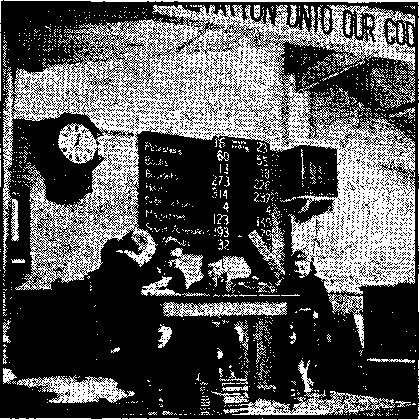
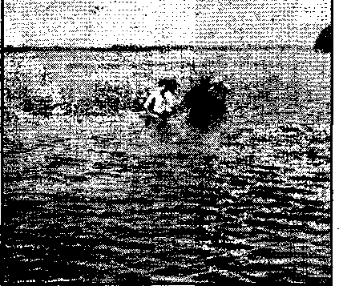
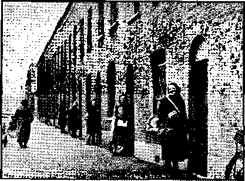
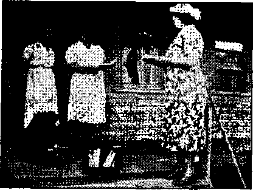

Glimpses of St. Louis Convention
To the Galveston (Texas) Daily Netos
London Shelters; Food Price Ramps;
Sea Birds’ Eggs; Still Some Protestants;
Jehovah’s witnesses
Chiropractic by Oklahoma Police; To The American Legion; How to Get the Marshal;
Wewoka Went to Town; ete.
More Terror of the Truth; The Huge Bird
Cage; The Low-down on Primates; The
Disgrace of Montreal; ete. 1
“Calves of Gold” ,
Vassal States of Southeastern Europe
The Navy of Solomon
Lulls in the Bombings; Agriculture in
Scotland; Conscientious Objectors
Fubli&hed every other Wednesday by WATCHTOWER'BIBLE AND TRACT SOCIETY, INC* 117 Adams St., Brooklyn* Nt ¥it U. S. A.
Editor Clayton J. Woodworth
Business Manager Nathan H. Knorr
Five Cents a Copy
$1 a year in the United States $1.25 to Canada and all other countries
NOTICE TO SUBSCRIBERS
Remittances: For your own safety, remit by postal or express money order. When coin or currency ia lost in the ordinary mails, there is no redress. Remittances from countries other than those named below may be made to the Brooklyn office, but only by International postal money order.
Receipt of a new or renewal subscription will be acknowledged only when requested. Notice of Exptratton is sent with the journal ono month before subscription expires. Please renew promptly to avoid loss of copies. Send change of address direct to us rather than to the post office. Your request should reach us at least two ’weeks before the date of issue with which it Is to take effect. Send your old as well as the new address. Copies win not be forwarded by the post office to your new address unless extra postage is provided by you, Published also in Afrikaans, Bohemian, Danish, Dutch, Finnish, French,' German, Greek, Hungarian, Japanese^ Norwegian* Polish, Portuguese* Spanish* Swedish* Ukrainian; also special Australian edition in English.
OFFICES FOR OTHER COUNTRIES
England 34 Craven Terrace, London, W. 2
Canada 40 Irwin Avenue, Toronto 5, Ontario
Australia 7 Beresford Road, Strathfield, N.S.W. South Africa ' 623 Boston House, Cape Town
Sintered as second-class matter at Brooklyn* N. Y1( under the Act of March 3* 1379.
Notanda
Imaginary Difference
Between Pope and Bishops
♦ In a political essay published by the University of' Notre Dame the “Reverend Father” Don Luigi Sturzo tries to make out that there is a difference between the attitude of the pope, who is now and has been for years an Italian bishop, and all the rest of the Italian bishops, who, to a man, have taken their stand by the side of Mussolini boosting him to win and restore Palestine to the Papacy. The difference is purely imaginary. Mr. Sturzo says that in the case of the bishops, when a big war is on, the nation takes precedence over morality.
“They Are for War”
♦ David said prophetically of the religionists, “I am for peace: but when I speak they are for war”; and the statement is true. While there is some confusion on this subject among Protestants, there is none among Catholic theologians, all of whom hold to the absolute obligation of the henchmen of Mussolini, Hitler or other monsters to yield themselves fully to their will, even unto death. One such spokesman said recently: “Conscientious objector's will find little support of their stand in the traditional teaching of the church.”
Conditions in Argentina
♦ The Roman Catholic church has been in full control of Argentina for about four hundred years. The result is summarized by a joint pastoral signed by [ Cardinal Copello and the six archbishops and fourteen bishops of that country. It says: “We find ourselves with overproduction of virtually all the necessaries of life, but with lamentable unemployment, very inadequate wages for workers, and with the majority of their families without homes and without any chance to improve their economic lot. Poverty and misery are everywhere.”
“And in His name shall the nations hope.”—Matthew 12:21, A.R.V. Volume XXIII ■ Brooklyn, N*Y., Wednesday, October 1, 1941 Number 575
Glimpses of St. Louis Convention
THE American press has ignored the greatest event of the year .anywhere on earth, the Theocratic Assembly of Jehovah’s witnesses in St. Louis, Mo., August 6-10. The public hews agencies have the religious faculty of ignoring, yes, even squelching riews of that which means life or death to humankind. They ignored the crucifixion of the despised Nazarene at the instance of demonized religionists of Jerusalem, leaving it for God’s own witnesses to report this most important event, by the Bible account. Today the press ignores the event of 1941 which ties in with that death of the King of Jehovah’s Theocratic Government, to wit, the biggest assembly ever of Ilis faithful consecrated followers and their united announcement of the establishment of that Government1 in the face of world opposition, thereby settling the supreme issue of universal DOMINATION,
The news of the proposed Theocratic Assembly leaking out weeks in advance by grapevine methods to the religionists, they, particularly Catholic Action, tried to prevent this event from materializing. They.had used the “fiag-salute” pretext threadbare and failed to stop Jehovah’s witnesses. Further, the United States Supreme Court and the Constitution tied their bloody, violent hands. So at St. Louis they tried new tactics, boycott through Big Business and the religious population; but the only result was that it caused thousands of visiting Christians tq be without hotel or rooming assignments and to have to
OCTOBER 1, 1941 sleep out on God’s own earth, under the starry canopy of the heavens, in the hottest city of the land and in the hottest season of the year, certainly more beneficial to them than to be cooped up in the torrid city quarters. This became •a public scandal that testified heavily in condemnation of the forces of religion, Like an- irresistible swarm of locusts Jehovah’s witnesses swept in, and St. Louisans opened their eyes in amazement and the religionists lifted .their hands in horror, and unholy defeat.
^Wednesday afternoon, August 6, Judge Rutherford opened the Assembly, with the keynote speech on the subject “Integrity”, for the first time in world history making clear the primary7 issue before all creatures, namely, universal domination. An audience of 64,000 packed out-' The Arena and the auxiliary buildings and swelled over the grounds. A tremendous campaign of activity by the conventioners followed this speech, advertising the coming Theocratic Govern-'ment and also Judge Rutherford’s public speeches, “Comfort All That Mourn,” Saturday, August 9, at 3 p.m., and “Children of The King”, Sunday, August 10, at 11 a.m.
Without the aid of a single line of commercial newspaper advertising the conventioners’ publicity campaign scored an unparalleled success, and 105,000 were present to hear the president of the Watch Tower Society Saturday afternoon in a speech which evoked repeated applause and which sounded from the sure prophetic Scriptures the death knell
3
of the Axis powers and of all totalitarian rule. Immediately after the speech 450,000 copies of it in booklet form were released for public distribution by the conventioners, and were quickly disposed of.
The Lord’s rich blessing was upon the 115,000 who gathered for the last convention day. Through a climax that only He could arrange, their joy of the previous four days was increased by the unparalleled events of Sunday. In the morning 3,903 were immersed, 1,357 being children; at eleven o’clock 15,000 children, in special reserved seats which more than half filled The Arena, and forming part of the great audience of 115,000, gave rapt attention to Judge, Rutherford’s feature lecture “Children of The King”. At its conclusion this panoramic flower-bed of brightly dressed children rippled away to the front, to the sides, and to the rear, in orderly but eager lines, to receive the gift which awaited each at his proper exit; for i Judge Rutherford had just delighted them by the announcement that every child was to be given free the book Children, first released as he held it up for them to see. Picture if you can these Godly children in summer colors, smiling at the towering Missourian, as they held the gift of gold and blue, which had come from Jehovah through his hands. Such enthusiasm is best described in pictures, which can be seen in the special brochure prepared to cover the convention.
In the afternoon what was scheduled as a farewell speech by the Watch Towek president became a rollicking laugh at the expense of the Roman Catholic Hierarchy addressed as “Fay-ther O’Hooligan”. That evening began, the homeward trek of more than 1.00,000, also dissolving a trailer city of 15,000. Said a departing conventioner to a St. Louis traffic officer: “Are you glad we are leaving you?” Officer: “Faith, and I’m not. Since you folks were here I got rid of ‘Purgatory’; now I am going to see if I can get back some of my ‘Purgatory’ money.”
Just off the wire is the news of the British version of the Theocratic Assembly. At Leicester, England, the exact sequence of the events of St. Louis were duplicated September 3-7. The speeches of Judge Rutherford had been recorded and sent to England for the occasion. In spite of war conditions the Saturday attendance was 10,000; on Sunday 12,000 in attendance included 2,000 children, who received the St. Louis lecture just four weeks after its original delivery.
The convention material is so voluminous, .including dramatic pictures and scenic photographs, that its proper treatment in a single issue of Consolation is impossible. Therefore a special brochure is under preparation to describe all the convention activities in sufficient detail.
. Origin of Laymen
♦ A contributor writes in and deftly suggests that the real reason why the Catholic Hierarchy refers to its lay population as such is that it is the laymen that lay the golden eggs. Not a bad idea. The Hierarchy is heavy on the prayer business. If it wanted to do the consistent thing it would stage a world-wide novena soon that it may be spared the turn at the plowhandles which it sees coming. Meantime the poor laymen continue to lay, not knowing they are robbed of every centime they part with.
Notice
♦ Due to the shortage in metal we are unable to get sufficient quantities of stitcher wire to put two stitches in magazines and booklets. To persons keeping permanent files of magazines we suggest that they sew the loose ends with thread.
As soon as sufficient wire can be obtained for double - stitching instead of single-stitching the magazines will be produced that way.
ACCORDING to a report in your paper this morning the Veterans of
Foreign Wars sent a resolution to Sen. Tom Connally, condemning Jehovah’s witnesses for distributing’ literature that is “detrimental of the government of the United States”.
I have read these publications and do not see how the government can be dam- . aged in any way, and surely it has not been up to this point, though I understand that the literature has been distributed for over 60 years here in the United States.
So much is printed today concerning un-American things. It seems that the best definition for the term is that every person who is not in agreement with what someone making a speech has to say must be classed as un-American. This applies to the peddler who is trying to show some businessman that he should buy one of his emblems calling upon God to-save America, up to some of our highest political advisers. Instead of taking only the negative in this matter, why not let someone point out wbat real Americanism is like? Make the positive strong enough, and the negative will prove, to be small.
One of the first true principles of Americanism is found in the rule that all men are created equal, with the inalienable right to worship God according to the dictates of their own consciences. Does America stand in jeopardy because there is too much worship of God in this country? and is she likely to be destroyed because a few zealous Christians call attention to their understanding of the Bible? These people could not have any connection with some earthly government foreign to America and not be detected, since they do their work openly on the streets and from door to door. Can it be possible that people have such poor regard for our law-enforcement agents as to think that
OCTOBER'!, 1941
Jehovah’s witnesses could do the things that they have been charged with and not be caught or found out? If some leaders of an organization think their religion is better than the things taught by Jehovah’s witnesses they have the right to say so; but why should they want to hide behind such an issue as loyalty to the government ? America does not belong to any one person or group of persons so that everyone else must conform to the views of this group or be punished. Or, at least, I hope it does not. Jesus was put to death because the religious leaders of His day induced the military power to believe that He was against the government. This was a trap of the Devil. There must be many honest Veterans today who would not want to see their organizations fall into the same trap.
I understand that the Veterans of Foreign Wars was organized to help veterans who fought for this country, and that Jehovah’s witnesses were organized to help their brothers understand the Bible, and to witness to the Word of God. There is no record that the witnesses have bothered the Veter-’ ans, and I doubt that they have; so why should the Veterans of Foreign Wars want to cause trouble for the witnesses?
Most of the un-American ndme-calling today reminds me of two small boys playing together, when one of the boys becomes angry and begins to curse the other with all the vile names he can think of. The boy cursing does not try to think of names that fit the characteristics of his playmate, but of names that will fit the hate in his own heart. However, small boys usually forget such things and are good friends again before the day is over; but big boys find it harder to forget. Our greatest men have been those who recognized the rights of others; our poorest are usually those who do not.-—II. A. McElvey.
5
British Comment
By J, 'Hemery {London)
London's Shelters
• The Shelter Commission for the London region says there is now sleeping accommodation in his district for 1,277,-000 persons in public and communal shelters, and for 3,495,000 in domestic shelters. In addition there are bunks in the London Tube stations for 23,000 persons. The slackening of the night attacks on London caused a great decrease in the regular use of the shelters; but even so, it was reported that when the July figures were taken 104,900 were using public shelters and 2,134,000 domestic shelters. The highest figures, taken last November, -were four times as great. The last raid, which was sharp but not one of the heaviest, caused an increase in shelter use. It is a surprising thing that the health of the people has not greatly deteriorated in view of the fact that such large numbers do not get their ordinary night’s rest in bed. The surface shelters erected in the streets in great numbers as a protection from blast were found unsatisfactory: they withstood neither the blast nor the earth shocks. Some have been closed and the others are being strengthened.
Food Price Ramps
• The Ministry of Food Control has done great things for the country in its purpose to get essential foods in supply and fair distribution; but while there are those who are determined to make as much money as possible out of the needs and the vmnts of the people, there will always be inequalities. A current food report says, amongst other items, “Yesterday there was not a roasting chicken to be had in the shops at the
6
Controlled price of 1/10 a lb.; but one could buy plenty of whole, cooked chickens at 20/- each, roasted and stuffed. Young birds, hardly a single portion each, wrere selling at 6/- each, roasted and stuffed. Uncontrolled fruit was abundant in the West End (London); melons were 27/6 each; grapes 12/- a lb.; red currants 3/-; table gooseberries 3/6; peaches 2/6 to 5/- each; nectarines 3/-to 4/- each. Cherries usually about 6d a lb. can be bought in small quantities at about five times that price. These ramp prices prevent the ordinary shopper from getting the little extras: only the richer folk can indulge themselves.”
Sea Birds’ Eggs
• It was lately reported here that sea birds’ eggs were to be collected in quantity from the Yorkshire coast, with the object of trying them as a supplement to the diminishing usual supply of domestic eggs. No report of that experiment has been noticed, but now a report of a similar experiment in Wales is published. Lord Davis arranged for a collection from an island in his estate, and it is said the experiment^ was entirely successful. Fifteen thousand gulls’ eggs w*ere gathered in the laying season; the collection w?as made twice weekly. The eggs were found very nutritious and wholesome. These eggs are not under controlled prices, but Lord Davis saw to it that the many sold were at reasonable prices. It is now suggested that the millions of such eggs which may be gathered round the coasts of Britain should he added to the food supply of the people.
Still Some Protestants
• The “Protestant Truth Society”, or-* ganized by some who are alive to the false claims of the Papacy, and are active in opposition to it, has issued a manifesto warning Protestants against the Roman Catholic movement, organized and parading under the name “The Sword of the Spirit”. As already noted
consolation
Assembly of 400 magazine publishers at Kingdom Hall, Craven Terrace, London, Saturday, May 10,1941
in these comments the Hierarchy in England has the wool pulled over the eyes of many of the clergy and preachers in England in this, and with their co-operation this Roman movement is making considerable progress through the land. The Protestant Truth Society’s manifesto reminds its readers of the Papacy claims, never altered, of its insidious actions, and it warns against any alliance with the movement. There is not space here to give details of the manifesto, but it is mentioned as showing that not all in English Protestantism are ready to be hoodwinked by the seemingly innocent moves of the Roman Catholic church, howeyer cunningly devised they may be. This “Sword of the Spirit” organization has no relation to the words which it has stolen from the Scriptures, but is a propaganda move to get ahead of the other systems as soon as conditions allow for its wider and more active operations. But the “Protestant Truth Society” itself is limited, as its name implies, and its members decline to take the Scriptures as their guide: they are “orthodox” in that they are supporters of the creeds, and the proclamation of the establishment of God’s Theocratic Government is anathema 'to them, as it is to all sections of religion. No doubt that the warning will have effect on many: these will get their eyes open to the false lead their parsons and
OCTOBER 1, 1941 preachers are giving to them, and there is a certain hope that as a result of the witness now being given to the establishment of The Theocracy and its judgments against all that is false they will flee to this “strong tower” where, only, they can find salvation.
Jehovah’s witnesses
• Amid all the changes into which the war and its necessities, its compulsory removals of homes and businesses through evacuations; amid the set purpose of the nation not to rest until Nazism and Fascism are destroyed and this menace to the life and peace of Britain and of Europe, Jehovah’s witnesses are carrying the comfort of the Word of God to the people. The certainty of the message, with its own demonstration as being the word of God to the people concerning His Kingdom, and the establishment of His Theocratic rule under Christ, and at His own appointed time, is bringing comfort to the hearts of many. The certainty of the Word of God is in open contrast to the mistiness and mystery of the creeds, and the quite apparent ignorance of the clergy as a class as to what the Bible is about. To them the Bible is little more than the book from which they can quote passages to support their church systems; a fact which events are disclosing to the people.
7
Chiropractic by Oklahoma Police
♦ In December, at Inola, Okla,, a school principal struck me with all his might, on the temple, dislocating my atlas, which required twelve adjustment's for relief. This was brought about because a little Jonadab had refused to salute the flag at his school and she was expelled. It was suggested that I explain the position of Jehovah’s witnesses to the school board, with the father of the child. While this was being done the school principal, being present, permitted a demon or many of them to get ‘full control of him and he knocked me practically out with the one blow on the temple, which blow was unexpected and undeserved. This caused my spine to be out of adjustment, and gave me a lot of trouble.
Throughout the winter months my health was not as good as it had been prior to this experience; however, it seems that with the coming of spring I was to have a full recovery in an unexpected way.
During April, after engaging in the street-corner magazine work at Barnsdall, Okla., the police chief met me and gave me a hard shove down the street on toward his police station, cursing much and very loud. The company servant there was with me, and earlier in the day the chief had refused to give us his co-operation in case of any violence. Upon arriving at the police station, cursing very loud, he walked to the jail cell, unlocked it, and then became further confused, being fully in the possession of the demons. He then looked through his keys, found one, and unlocked a cabinet, from which he took a big club. Instead of throwing us into the jail cell, he decided to do more cursing; and realizing that the club was in his hands, and seeing that we were not in the least bit excited nor afraid of him, he decided to try to hit me with the club. He came at me with the club in a manner that reminds one of the way a pitcher winds up before the throw of a ball. I was trying to guard myself from the blow on the head, remembering the Inola incident, when the police chief — “whose name is Davis” — again became confused. He was too near me to do a good job with the club, so he decided on the point of his shoe. Davis literally kicked me in the seat of the trousers, out of the police station and into the- street, with orders to get out of town. Many Barnsdall people witnessed this outrage, which was also unexpected and undeserved.
Since this experience at Barnsdall I have been enjoying much better health than I have had for a long time, hence in better physical condition to do the work that has been assigned to me in The Theocracy, for which I give all thanks to Jehovah. Surely the demons, in using Davis as they did, did not intend (by causing Davis to kick me so
Children show from the platform how to conduct a Model Study—Enfield, London, England.
hard) to repair at Barnsdall the damage that was actually done at Inola. An unusual way of receiving a chiropractic adjustment.—Earl R. Brame.
To The American Legion
♦ In reply to the unwarranted attack upon Jehovah's witnesses hy the Andrew Jackson Post of the American Legion of TIigh Point, in regard to a zone assembly of the witnesses in that city and appearing in your Tuesday issue of the Journal, the work of these law-abiding people was well known all over the earth long before the conception of the Legion movement, and their only objective is to strictly adhere to all the commands of God. There is no case on record anywhere to show that they have ever interfered with any government or organization, civic, religious, political or patriotic, in exercising their full rights in pursuit of liberty and freedom.
Jehovah’s witnesses respect the American Hag and have never requested that any other flag be placed above it, yet they do not worship flags and do not bow themselves down to anything at all except the great Creator of heaven and
Theocratic immersion, St. Augustine, Fla.
OCTOBER 1, 1941
“Locusts” in North East London
earth. This course of action is in no way inimical to the laws of our state and country.
Just such un-American attacks upon law-abiding minority groups in democratic America naturally force all thinking people to recall the parallel conditions in Europe, a few years ago, which, when fanned by the flames of hatred and mob violence, developed into a steamroller totalitarian monstrosity that is now threatening the very foundations of all civilized government, even civilization itself.
Men of The American Legion, review the conduct of some of your associated posts and ponder soberly upon the tactics you have used against a God-fearing people in your midst; a people who wish to bring only hope and comfort to all mankind, whose hearts are burdened with sorrow and grief for the horrors, distress and peril they now see prevailing in ’most all the earth.
God’s kingdom under Christ Jesus is truly the only hope of the world, and the greatest privilege that any creature could now have is a part in keeping this message continually before his fellow creatures, as commanded by the Almighty God.
I say in behalf of Jehovah’s witnesses, with whom 1 am proud to be associated, that when they call at your home,
9
you are face to face with a friend and a sincere ambassador of that Kingdom for which Jesus taught us to pray, and not a foreign spy, Nazi, Fascist, Communist nor infidel, as some of the American Legion witch-hunters would have you believe.
We respect the American flag, love our country, and are willing to obey all laws that do not conflict with God’s supreme law-—and the Constitution makes no such requirement.-—J. B. Arvin, in the Winston-Salem (N. C.) Journal and Sentinel.
How to Get the Marshal
♦ A. witness being arrested five times in as many weeks had been released so that she might get bond, but it seemed that the officials had made it up that they would put her to as much trouble as possible. The mayor refused the bond. She was told that the marshal was the one that should approve the bond; but he must have been hiding. So, after running around for about two hours trying to find him, she told her husband, "Go to the car and get my magazine bag and I will get out on the street corner, and I am sure he will be here.” This was done, and she located the marshal in just two minutes and had her bond approved.—Paul Borchert, Texas.
Doorstep setup, Crandon. Wis. AH you need say is, “I have here an important public announcement that you should hear.” Then start the phonograph.
10
Wewoka Went to Town
♦ Wewoka, Oklahoma, went to town for several days in the spring of‘J94L First the police, clothed with what they regarded as all power, arrested five; of Jehovah’s witnesses for distributing Christian literature, and fined them $20 each. Then the witnesses were followed out of town and stoned; one of three hit was a woman. That evening four ministers declared vice and crime were ignored in Wewoka; which was equivalent td saying the police of the town were miserable gangsters.
The next day the chief of police of the city complained that Jehovah’s witnesses had been arrested because of telephone calls, and he just did not know that the preachers were going to take it up for the witnesses. The desk sergeant who gladly received the complaints was Barney McNeil op. Arrah, Barney I
The next day the witnesses filed suit for $20,000 against the two policemen and the un-American Legion official that did the stoning of the woman and the men. The name of the Legion official was Dr. W. K. Batson, fourth district commander. One of the male witnesses had his cheek split open by the attentions of Dr. Batson and his police friends, together with the stones they shied and used as mauls. One of the stone-handlers was the chief of police, Grover Harrison. The same day the five ministers of the city issued a public statement, saying, in part:
There have been repeated occasions both in the state and in the nation during the last year in which the Jehovah’s witnesses have been subjected to irresponsible persecution and to mob violence. The specific charge and the only charge lodged against the witnesses Monday morning was that of disturbing the peace. Two citizens testified against them. In our opinion the evidence submitted was insufficient and unconvincing, and the verdict of guilt was unjustified. By the same evidence as was presented at the police court Monday
CONSOLATIONmorning, any member of any recognized local church, seeking to do “personal work” and to win prospective members for Christ could be found guilty of disturbing the peace and fined.
The Gentleman at Old Orchard
♦ The gentleman at Old Orchard, Maine, is a French Catholic gentleman somewhat over six feet in height. Acting as he thought his spiritual adviser would wish, he slapped the face of a young Christian woman while she was engaged in the magazine street work. He thought this would work out all right, and so it did. The young woman reached for his shirt and deftly removed it at one grab. She then took one grab at his pants and got most of them, but the record is a little indistinct at this point, and as the manuscript does not clearly draw the line, none is drawn. The gentleman then ran for a cop, but the cop laughed at him and said, “That is your fight, not mine.” And so the majesty of the law was satisfied with his bare back and more or less bare legs. The crowd started to laugh, whereupon the gentleman offered to lick one of the male witnesses to a pulp with a club, but he could not proceed without pants, and so the story ends. No glory is less to be sought after than to go down in history as the unclothed jackass of Old Orchard who wanted to please papa by slapping a young woman and only got laughed at.
Got What He Richly Deserved
♦ Jehovah’s witnesses were having a zone assembly at the farm homestead of Sidney Ramsey, Howe, Oklahoma. There is as yet no law in the United States that Christian people may not meet together at a private home in the country to talk about God’s kingdom. However, that is not religious. So citizens of Poteau, Panama and Howe, Oklahoma, organized themselves into a mob and went out to the Ramsey farm, throwing stones and clubs at cars, seizing phonographs and burning literature which was the private property of other
OCTOBER 1, 1M1 people. One result was that Jack Fuller of Panama, Oklahoma, was taken to a hospital in a serious condition; and if he was one of the attackers, this is just to say that he got what he deserved, and if he is now dead all decent men should rejoice that it is so.
How the Lost Was Found
♦ You sent us the name of a good-will person who lives, in the rurals, nine miles out of Lonoke. We tried for a long time to find her, but were unable to do so. One Saturday, working with the magazines on the streets of Lonoke, w’e had been-located not more than fif-. teen minutes until a lady came to me, took a Watchtower, and said she had some of the books and liked them. I asked jier name, and lo! she was the party we were trying to locate. In a few days she came one evening to our trailer, brought father and mother along, and asked many questions. We ran some of the lectures for them. Now we have a model study in their home; they have subscribed for The Watchtower and will take Consolation. AH are rejoicing with us in giving praise to Jehovah—F. B. Sergeant and wife, pioneers, Arkansas.
Jesus Arrested in Stillwater
♦ It seems that Jesus of Nazareth made certain remarks that cast reproach upon the scribes and Pharisees and other hypocrites of His day. See Matthew, chapter 23. It $lso happens that Stillwater, Oklahoma, has a city ordinance (keep-a straight face now) that makes such language illegal; so the city arrested Mrs. E. F. Walrod, one of Jehovah’s witnesses, for circulating literature which somebody in town (it might be anybody at all) might construe to be objectionable to himself (or herself). Jesus said that what is done to His people is done to himself; so that is how Jesus was arrested in Stillwater and brought before Mayor M. J. Bradley. Incidentally, Mayor Bradley died within a week thereafter.
(To be continued]
11
THE
TOTALITARIAN
More Terror of the Truth
♦ When we were small we often heard it said, “Two Turks are about.” Now we have seen, not two Turks, but two who appear to be American women leave a house on Pacheco street, between Obispo Lazo [literally, Bishop Snare) and* Urdaneta, equipped with two immense bags of Protestant propaganda I They seem to do a brisk business: little books and booklets luxuriously printed, with very suggestive titles and beautiful illustrations, three for one bolivar. These women have an admirable tongue; so much so that they made a sale even in a priest’s home. Therefore keep your eyes open, wide open, parishioners and residents of Pacheco street.—Translated from “The Parochial Leaflet” of Zulia-Maracaibo Diocese, Venezuela, December 17, 1939.
The Huge Bird Cage
♦ It is well known that pigeons and other birds fly in and out of the great windows of the Vatican that open out on St. Peter’s Square. It was therefore nothing remarkable that a pigeon flew in and parked itself on some red velvet hangings while the pope was “blessing” 600 newly wedded couples, as related in the Catholic Times. The Leicester Mail made a better story out of it by making it 800 couples; but what is a little matter of 200 couples between newspapermen, when it comes to giving the pope a break in the day’s news. It is a big wonder that the papers don’t have at least a quarter column every time he washes his feet; and in view of the fact that he expects to have them kissed off and on, it might not be such a waste of space, at that.
12
The Low-down on Primates
♦ In studying my Watchtower lesson I had occasion to look up the definition of “primacy”, and was referred there to “primate”. This is what I found in Webster's Collegiate Dictionary, which apparently is perfectly legitimate: “A bishop of the see which ranks first in a province or provinces. ... One of the highest order of mammals, consisting of man and the apes, monkeys, marmosets and lemurs.”
On my looking up “lemurs”, it says, “They are allied to the monkeys, but are usually regarded as constituting a distinct suborder. Nearly all have a foxlike muzzle, large eyes, and soft woolly fur” and lace petticoats. Further regarding “lemures”: “Roman Religion—spirits of the dead; ghosts.”—Anonymous.
The Disgrace of Montreal
♦ The police of Montreal disgraced themselves by arresting and causing long terms of imprisonment of Jehovah’s witnesses (women as well as men) for obeying the commandment of Almighty God to preach the Kingdom message as the only hope of the world. Hardly had this news come through before it was followed by information that four French Catholic; policemen on the same police force had been specially entrusted with the care of a drug store, when they proceeded to steal $400 worth of merchandise, which they then divided among themselves. Some of the cigars, cigarettes, candy and toilet articles stolen were found in each of the homes of the four men. All this seems regular.
Says the Scribe
♦ Says the scribe: “ ’Sfunny, but Catholics must tell all their sins to the priest, and pay for telling them, but their wants they can tell to the saints or to the Lord, and the priest does nothing to help pay the bill. So, if you want your sins forgiven, go to the priest, and if you want anything else, you know where you can go, but it isn’t polite to mention it.”
CONSOLATION
All True Ministers to Be Imprisoned
♦ The world believes that it can solve its problems by military power, but such is untrue. The only hope is in The Theocracy, and as the world becomes more and more military-minded, it must follow, as the night the day, that the true ministers, of God will become more and more offensive to the so-called “powers that be” until their logical place is in prison or in death before the firing squads. The time will come when no such thing as a conscientious objector will be permitted to have his liberty, even if permitted to have his life. But it can be set down as true that ministers of the Devil, priests,- monks, nuns and other clergy of Satan, will be allowed to carry on until close to the very end.
*
Tutoring the Infant Mind
♦ A group of Italian cardinals, including some at the Papal Court (but not Pope Pius himself), is looking far into the future. The prelates reportedly argue that the German and Russian revolutions will eventually evolve philosophies that are neither Nazi nor Communist, and with which the Church may be able to strike something like harmony. If this happens, the Italians supposedly believe, the Church may fare better under the “new order” than under the present structure.—N ewsweek, February 10, 1941.
Out to Grab the Labor Unions
♦ The Roman Catholic Hierarchy is defi-■ nitely out to grab the American labor unions, with its Association of Catholic Trade Unionists as a basis, already organized in 15 industrial cities. At its recent convention greetings were sent to it by over a score of archbishops and bishops. So says the London Catholic Herald. Do you'know of any reason why there should be an Association of Methodist Trade Unionists, or an Association of Presbyterian Trade Unionists? Or of other sect?
OCTOBER 1, 1M1
Condemned as Anti-Fascist
♦ At the close of a month of greatest activity, notice was received that the Minister of Justice [Sao Paulo, Brazil] ordered the Society dissolved and its work stopped. Guards were stationed
, at the gate to see that the Society was not functioning. For nearly a month the office was almost “incommunicado”, until a formal protest could be filed with the Brazilian authorities. When the order was given to dissolve the Society no reason was assigned for the action, but later, in conference with the office of the Minister of Justice, representatives of the Society were told that the objection to the Society was that it was an American organization and anti-Fascist.—1941 Yearbook of Jehovah's witnesses.
Decorating Adolf’s Heroes
♦ Hitler believes in seeing to it that his chief supporters receive decorations. A ‘ United Press dispatch from Berlin, under date of February 8, 1941, stated that on that day 32 Catholic priests had been decorated with the Iron Cross, first class, while 71 had been decorated with the Iron Cross, second class. That’s right, Adolf, stand by the ones that gave you your start, wrote your book, gave you their advice, and now adore you but make a blundering attempt to convey the impression in America that you are persecuting them.
No Beeswax, No "Blessing”
♦ You did not know that this “blessing” business was mixed with. beeswax, did you? Well, that is the low-down. It came right through by telephone from Rome to the New York Times that the candles the pope has to have on Candlemas Day must have just so much beeswax along with a certain proportion of animal fats, and because the beeswax and the fats are hard to get in wartime the pope said God would not have any hard feelings if the candles in 1941 were shorter than usual. And so they were made shorter. And that was that.
, , 13
Barrios and the Skeletons '
♦ When they were excavating for a sewer through the city of Guatemala, the workmen were precipitated into a subterranean passage that led from a monastery to a nunnery eight blocks away. This passage was strewn with baby skeletons. It so incensed General Barrios that although he was a Catholic and strictly in a Catholic country, he ordered out his troops, took thirty bishops and priests down into this passage, and hung them with no caps over their faces, so in their death struggle they could see the baby skeletons. He then tore down the enclosures of the monastery and nunnery and made them subject to rigid inspections.—The Monitor.
Just as Innocent
♦ Just as innocent as those seventeen sweet boys of Coughlin’s Christian Front (all of whom were released after a plot to seize the United States Government —and one of whom suicided because he knew he was guilty), the “Reverend Father” Luis Vogel was exonerated for teaching, at the United States navy base at Subic, in the Philippines, that totalitarianism, and not democracy, is the ideal government; that the Aryans (Germans) have established powerful and efficient governments in Europe and that it is futile for small countries to resist the demands of mighty countries (like Germany, for example, or Japan).
When the Refugees Came Home
♦ When the refugees came home from Italy there were more than 450 priests, seminarians and nuns out of a total of 1,907 passengers on the United States liner Manhattan. Italy was then in the war; the totalitarian scheme for seizing the earth was in good shape in Europe, and the priests could be used on Fifth Column work in the United States? The nuns, too, would be useful. So home they came. The religious business was worked day and night, so that every priest could have a whack at it.
James the Son of Zebedee
♦ The only places where the body of James the son of Zebedee lies buried are at Saragossa, Spain; Compostella, Spain; Toulouse, France; Monte Gri-giano, Italy; and Zibili, Italy. This bit of ecclesiastical history from the Roman Catholic Register seems about the most reliable and dependable thing in the paper, the reason being that James was put to death by Herod Agrippa I, in Palestine. Don’t ask how James’ body got from Palestine to Saragossa, Compostella, Toulouse, Monte Grigiano, and Zibili, because that would show you do not have “faith”, and if you don’t have “faith” you will never be able to get your relatives out of “Purgatory”.
He “Blessed” the Third Term
♦ The Universe, alone among all the newspapers in these islands, it is thought, recorded at the time that a Catholic priest gave the benediction at the close of President Roosevelt’s inauguration ceremony. That was due to the fact that a member of the staff who listened to the' radio broadcast recognized Mgr. Ready’s voice. News from the U. S. now adds that Mgr. Ready (who was a visitor to this country a couple of years ago) was a guest at the luncheon served in the White House after the ceremony and afterwards occupied a place on the reviewing stand in front of the President’s official residence.—London Catholic Universe, Feb. 21, 1941.
A Bishop as a Minesweeper
♦ The “Right Reverend” Dr. Paul Ful-crand de Labilliere, bishop, dean of Westminster (don’t overlook any of the titles), thinks that a good place for conscientious objectors would be as volunteer minesweepers. In the same conversation that bishop said, “Of course, war is contrary to the whole outlook of Our Lord.” That being the ease, and the bishop claiming to represent the Lord, and to speak for Him, the only logical thing for the bishop to do is to volunteer as a minesweeper. He might not be of any good at that job, but he is of no good at his present one; and, as Britain needs minesweepers, why not put him to work? He has rested long enough.
Sanitation of Sister-Nurses
♦ One of the great inconveniences and discomforts of a sister - nurse is the clothes which she is compelled to -wear. The garb which I wore for thirty-nine years weighed about fifteen pounds, and there is no change of weight in this “holy habit” for cold or warm weather. Our petticoats and stbckings are the only garments that are changed in weight for the different temperatures. We are allowed two garbs at a time, but a sister wears one nearly all the time until it is worn out. All the cleaning these garbs get is a little brushing with soap and water'; and when it gets discolored, it is dyed to its original color. One of the garbs I had for twelve years, and when I discarded it there was only a small piece of the original left. Think of the cleanliness and sanitation of these poor girls, wearing such cjothes, perspiring over the sick, and from cooking and doing laundry work, and even being under the rule of asking permission to take a bath! Over all this, when we cared for the sick, we tied a large white apron, slipped on a pair of white sleeves, and then the patients would say, “How sanitary these sisters were!”—From The Demands of Rome, by Elizabeth Schoffen.
Afraid of the Women
♦ When Cardinal Villeneuve, the dictator of Quebec province, put the padlock law on the books, by which he, or the politicians under his control, can padlock any home without any reason being assigned, he showed that he is afraid of the men. They might learn something and teach it to others, and in Quebec this is sedition. Having revealed his fear of the men, he now reveals his fear of the women also, and is out with
OCTOBER 1, 1941 a pronunciamento against'women’s voting, as they now do in all the countries not under control of the' Vatican. The next thing, he will probably issue an order that priests and monks may not vote. That will make it 100 percent.
Papa Was Mad
♦ The Spanish ambassador to the pope had it figured out that he was soon to be a daddy, and sure enough he was. He also had it figured out that the Papa! secretary of state would christen his new baby. In fact, it was all fixed up between them. In the meantime the Spanish minister of government, Ramon Serrano Suner, visited Rome and, through some oversight, forgot to visit Mr, Pacelli at the Vatican. The pope never forgives nor forgets, and so, to show that papa was mad, when the baby showed up the Papal secretary of state sent word that somebody else would have to christen the youngster. Can you think of anything more ridiculously childish?
Getting Back into Power
♦ Under the reform government of Benito Juarez all church property in Mexico was declared to be the-property of the state. Later, the church was prohibited from acquiring real property and teaching or practicing outside of churches. In 1926 all foreign priests were expelled and the number of priests was reduced from 4,493 to 197, and even now may not be legally more than 350. But the church is slowly getting back into power in Mexico, despite its record of having done all possible to retard social progress.
Ulster in Dead Earnest
♦ The bishop of Bown and Connor says that in Ulster there is a serious objection to union with Catholic Eire to the -south, and that the Ulster soldiers batter In the doors of homes with rifle butts and brandish revolvers during questioning of Catholic families.
(To be continued)
15
IN THESE days, when politicians are insisting on “more religion”, a common expression frequently met up with is, to wit, “Oh, we have our own church; we don’t need any of that” (meaning some proffered literature containing Bible instruction).
To the chosen people of old Almighty -God’s commandment was: “Thou shalt not make unto thee a graven image, nor any likeness of any thing that is in heaven above, or that is in the earth beneath, or that is in the water under the earth: thou shalt not bow down thyself unto them, nor serve them; for I Jehovah thy God am a jealous God” (Exodus 20:*3-5, Am. Rev. Ver.) After King Solomon’s death, Jeroboam, the new ruler of ten tribes of the nation of Israel, caused the ten tribes to sin, and in sacred Scripture his act is spoken of as “the sin of Jeroboam” and, later, when Samaria became the capital city, “the sin of Samaria.” Fearing that if the ten tribes went up to Jerusalem to worship in the way Jehovah had appointed all the people would return to the kingdom of Judah, the rebel king, Jeroboam, made two golden calves, or images, and put one at Bethel and the other at Dan as objects through which Jehovah presumably would be worshiped. Then he said to the people that it was too much for them* to go up to Jerusalem, and, pointing to these golden calves, he said: “Behold thy gods, 0 Israel, which brought thee up out of the land of Egj^it.” (1 Kings 12:26-30) Such worship of God through images is the “sin of Samaria”, named at Amos 8:14,
There are groups of professed “Christian” people claiming to worship God that have taken a similar course. The Lutherans set up Martin Luther as their leader, and the I^utheran church organization as their graven image, and insist that God must be worshiped by and through them only. King Henry,- VIII was the first British ruler to assume the title “Defender of the Faith”, which title the pope of Rome originally conferred upon him and which title the rulers of Britain claim to this day, and the Church of England claims that the only proper worship of God is through this “golden calf”, or image. Others have set up Wesley and the organization of the Wesley-ans as a “golden image” for worship; and still others hold to the “Hierarchy of Authority” under the ruler of Vatican City.
From 1878 to 1916 the Lord God gave His truly consecrated servants on earth much truth, restoring much Bible truth that had long been hidden from view, and greatly using Charles T. Bussell, who was a faithful follower of Christ, to bring the truth to the attention of the people. What he wrote and published was wonderfully used of the Lord to aid others to know God and see His purposes. When he finished his earthly course many that had been apparently walking in the “narrow way” began to go backward. They formed themselves into groups and claimed that the sum total of truth revealed to God’s people is found in what C. T. Bussell did and wrote and that he is ‘that faithful and wise servant whom the Lord has made ruler over all his goods’; and they insist that the only true worship is by and through him and his works, and thereby they set up for themselves an ‘ “image” for worship.
Today, however, there are in “the present truth” of the Bible no Lutherans, no Episcopalians, no Wesleyans, no “Bussellites”, nor the fqjlowers of any other man. And why? The reason is
CONSOLATION
that Jehovah God is pleased to reveal His advancing truth henceforth to those who give honor and glory to the great Creator, and not to creatures. Job 32: 21,22 reads: “Let me not, I pray you, accept any man's person; neither let me give flattering titles unto man. For I know not to give flattering titles; in so doing my Maker would soon take me. away.” When, at the crisis of the World War, the Lord came to His spiritual temple He put a test upon His professed followers on earth, which test was made to the end that'those finally approved might offer unto the Lord God an “offering in righteousness”, that is, right and acceptable worship to Him by serving as His witnesses. That group of persons, however, who ignore God’s appointed way as set forth in the Bible and who, insist upon worshiping Him in their own appointed and traditional manner could not be pleasing to the Lord, It seems quite clear that these are the ones referred to at Psalm 16:4, to wit: ‘They will multiply their sorrows who [go] backward: I will not pour out their drink-offerings, because of bloodshed, nor will I take their names upon my lips.’-Rotherham’s translation.
The facts show that this verse pertains to judgment. The Scriptures show that “judgment must begin at the house of God” and at the time when the Lord comes to His temple for judgment. (See 1 Peter 4:17,18.) Other scriptures show that approximately at the time the Lord came to His temple in spirit there would be in the land of “Christendom” (and there has been) a “famine ... of hearing the words of the Lord”, and hence many run to and fro seeking the Word of the Lord God in the religious organizations and do not find it. The reason given at Amos 8:11-14 is that such are “they that swear by the sin of Samaria”. This means that such insist on worshiping God through the “image” of their own making. They do not humble themselves under the mighty hand of Jehovah God, but worship the work of the one or ones whom they idolize. It is written, at 1 Peter 5:5, 6, that God pushes away from Him those who take this course.
Those who follow a way different from what Jehovah God has appointed are not pleasing to Him. Concerning those who take a wrongful course, the Lord says that their poured - out offerings, even though they appear in their own sight as precious as blood, will not be acceptable to Him, nor will He take their names upon His lips. The Almighty God will have those who worship Him do so in spirit and in truth. They do not follow the unscriptural reasoning that “by the aid of sacred pictures our devotion and love for the original are intensified, because we can concentrate our thoughts more intently on the object of our affections”. (Cardinal Gibbons’ The Faith of Our Fathers, page 201) Rather they “walk by faith, not by sight”; “while we look not at the things which are seen, but at the things which are not seen: for the things which are seen are temporal; but the things which are not seen are eternal.”—2 Corinthians 5:7; 4:18.
The Lord’s servant, seeing the Lord’s way, and not desiring to indulge in controversy/with those who decline to be obedient to God’s commandment, turns to Jehovah and says: “Jehovah is my share, my portion, and my cup, Jehovah is the maintainer of my lot for me: -the measuring lines have fallen for me in pleasant places, verily I mine inheritance is mighty over me.” (Psalm 16: 5, 6,. Roth.) Declaring that religionists may take whatsoever course they may desire, God’s true servant says he has chosen that which Jehovah has for him, and he delights therein. As for the religionists, one might induce himself to believe that he is the servant of God, but unless he serves God in the way which Jehovah has appointed, he cannot be pleasing to the Most High God.—See Hosea 8:5-7.
Vassal States of Southeastern Europe
Poland Under Hitler
♦ All Polish universities, secondary schools and technical colleges have been closed. Nearly three-quarters of the children have been deprived of even elementary schools. The publication of all books, pamphlets and music is prohibited. The death penalty has been introduced for food “speculation”, the evasion of rationing decrees, listening to foreign broadcasts, “insults” to German officials, and other offenses. Although the country has always been an exporter of foodstuffs, such have been the exactions of those who are to build the “New Europe” that the entire population lives on semi-starvation rations.
Theatricals in Bulgaria
♦ Dictators have to-be showmen, of the P. T. Barnum type, in order to get away with it; and so it was quite the appropriate thing that as Bulgaria did its belly-flop before Hitler, and the premier returned to his capital at Sofia after making his surrender, and the Germans were rushing across his country toward Greece, it just had to be that on that very day all the churches in Sofia were engaged in returning thanks for Bulgaria’s deliverance from Turkish rule in 1878. Also, it makes a nice hint to Turkey to have such a “deliverer” as Adolf arrive at such a time. '
Gauleiter Rule in Rumania
♦ Under Gauleiter rule in Rumania all able-bodied persons 12 years of age and over, regardless of sex, were drafted for farm labor, and the farmers must plant what is prescribed. It is now several years since the people of Rumania have been at liberty to study the Holy Scriptures or to explain them to others, and now they have no liberties at all except such as are common to the lower animals. Rumanians are being kept in Hitler’s front lines in his war with Russia.
Blitzkrieg in the Mountains
♦ The German report is that some of their dive-bombers swooped down as close as 30 feet above Greek and Yugoslav hill forts, pillboxes and machine-gun nests, blasted them, then zoomed up and away. The armored troops then came in, and fanned out from numerous spearheads to cut communications and carve up pocketed troop units. It was a ifloun-tain blitzkrieg, and to date it has worked as well as did Hitler’s prairie blitzes in Poland, the Low Countries and France. —New YTork Daily News, April 11, 1941.
April 10, 1941
♦ April 10, 1941, Franz von Papen, German ambassador to Turkey, ^gave the Turkish Government assurances that Germany has no intention of attacking Turkey. At the moment, it does seem as if the German purpose is to go around Turkey rather than through if, but if it should later suit Germany’s purpose to go through it after going around it, do you think von Papen will change his lifelong habit of lying?
Lists Were Already Made
♦ When Hitler seized Yugoslavia, the persons that were to be thrown into prison had already been listed, weeks beforehand. The fifth columnists, i.e., the priests, do their work well, and it is a foregone conclusion that in America they already have a complete list of all of Jehovah’s witnesses and others who stand for freedom and truth.
The Bomb Plot at Sofia
♦ As the British minister to Bulgaria withdrew, after the G erman army marched in, unknown heroes of the “new order” added twm suitcases to his hand baggage, containing explosives so timed that a girl stenographer was killed when the bombs in one of them went off, when the party had arrived at Istanbul.
Greece
The Anzacs in Crete
♦ The Japanese have the most exalted admiration of military valor, and though the Japanese government is on the side of the Axis, and thus against Britain, the Japan Times Advertiser, organ of the Foreign Office, pays this tribute to the Anzacs and Greeks who were overwhelmed from the clouds in the battle of Crete:
UnreinfQreed, unfed, unshaved, unslept, unrelieved, unwashed, unled in terrible confusion, unsupported by anti-aircraft guns, uncertain of escape, untended when wounded, unburied when dead, unremittingly bombed and blasted, exhausted, red-eyed, grim, gaunt, stripped of the veneer of civilization in the long last condition of fear, knowing only bloody hand-to-hand fighting was their lot; dimly pondering in the half light a demoni-' aeal torment, for all they knew enduring Armageddon—this was the incredibly horrible reality of those gallants, which only Dante could describe,
Three-Fourths Escaped
♦ It is easy enough for people protected by oceans three thousand miles wide to sneer, as some do, at Britain’s evacuations from Narvik, from Dunkerque, from Greece, and later from Crete. But it is interesting and significant that Britain had the courage to put 60,000 men into Greece, not to conquer Germany’s army of 500,000 men (they could not have done that), but to show the Greeks that they are of the same courageous blood, and to show the onrushing Germans that they must pay a price for all they get henceforth. Some 48,00(1 of the British that went into Greece were safely evacuated when resistance was no longer possible. And another three-fourths were withdrawn from Crete when that could not be held. It is a record of bulldog tenacity and courage that even the Germans must admire. American boys will soon be alongside the British.
Flame Throwers in Greece
♦ Probably no weapon made by man compares with the terror inspired by liquid fire, which the Germans first used effectively in 1916. At that time a dozen flame throwers effectively scattered a regiment of 1,900 men, capturing most of them. The flames are thrown 100 feet, in forty bursts of a second each. By using up the oxygen in the air the flame thrower may stop a tank dead in its tracks. Or in attacking a fortress a single burst of flaming oil may turn the interior of it into a fortress in which no human can live. In their projected invasion of Britain, ’ much stress is laid upon the probable effect of the flame throwers in shattering civilian morale and resistance; as was also done in Greece.
The Invaders of Crete
♦ Germany has the murder business down to a finer art than any other nation and is always showing something new and interesting in butchers’ art. Thus the invaders of Crete had fawn-colored parachutes which, at a distance, could hardly be distinguished from the clouds. Other parts of their apparel were greenish silk jackets lined with wool and trousers to match. Kneecaps and soles of the feet were protected with rubber pads two inches thick, and their helmets also had a two-inch rubber protection band. Moreover, and this is the devastating fact about it, these air invaders, armed with tommy-guns, scored a complete success. •
Greek Losses of Ships
♦ In a war such as now ravaging the world the noncombatants suffer almost as much as the nations at war. In the first year of the war Greece suffered a loss of 41 ships, amounting to about ten percent of her merchant fleet. This involved the death of about 200 members of her merchant marine.
Italy
The British Parachute Jumpers
♦ People beyond the frontiers of Italy can scarcely imagine the effect on Italian nerves of reports that the British wore dropping down from the skies. The aqueduct that supplies two southern provinces with water was not badly damaged, so that the supply ran again after two and a half days, but the effect from the point of view of propaganda far exceeded that brief interruption.
The attitude, moreover, of captured British parachutists is known to Italians and impressed them. The volunteers are all bull-necked Englishmen, far from decadent. In one prison camp they have already dug their way out twice, only to be recaptured in each instance by sheer inadvertence.
When asked what they would have done had they got away from the camp safely, these men answered with a contempt that the Italian himself admires: “We would have stolen a warship from the Royal Italian Navy.”
Most amusing of all, these British parachute jumpers speak both Italian and German. One group I know of made the villagers carry their dynamite to the bridge that they successfully destroyed. Their contempt for the Italian and their attitude of cuning him into obedience is perfectly understood in the peninsula. The Italians have revised their attitude toward Anglo-Saxons. Such men win the respect even of Fascists.—John T. Whitaker, in the New York Post, April 15, 1941.
Italian Airplane Engines
♦ It is of interest that up until the time Mussolini’s spiritual adviser told him the due time had arrived to stab France in the back he was making airplane engines for Britain on a huge scale. Those not shipped before the back-stabbing were subsequently used to equip planes to drop bombs on the purchasers.
Lying to the Italians
♦ Somebody is getting a lot of fun lying to the Italians. When the great British victories in Egypt and Libya and the Greek victories in Greece and Albania began, mischievous voices in good Italian informed everybody in Italy that Mussolini had won great victories, capturing 60,000 here, 100,000 there, and, finally, 150,000 in some other place. The object was, of course, to build up false hopes so that when the truth became known it would be almost or quite un- ' bearable. The Italians are a credulous but kind-hearted and hard-working people. It is to their credit that they are not a warlike people. Humanity has too many warlike ones in all parts of the * world.
In the Ionian Sea
♦ The day of battle in the Ionian sea was a bad day for Mussolini. The British enticed him out to sea far enough that they could attack him, when they sent three 10,000-ton cruisers to the bottom, along with two big, new destroyers, and bunged up one of Italy's biggest battleships so that it had to limp back to port at nine miles an hour; all this without getting a scratch in return. The German dive-bombers helped the Italians into death; they came along and prevented the British from saving a lot of the drowning Italian sailors.
Fascism Licked, and Knows It
♦ Fascism is licked, and the leaders know it. The best evidence of this is that they have been sending truckloads of Italian notes into Switzerland lately. But it looks like poor insurance against want. Is there anything to prevent Hitler from taking Switzerland when it suits his purposes? And if he does, and finds those notes there, who will get the notes? And what will the men get who sent them on ahead of their own anticipated arrival?
Inventiojn
The Electric Eye and Mankind
♦ The electric eye is producing a won. derful effect on the human family ’ in the superior way in which it does things that humans used to do, and in the way that it constantly reduces the number of jobs available. Everywhere doors open mysteriously, and close with equal mystery as humans or automobiles or what not approach them. Lights go on and off as natural lights brighten or grow dim. The making of textiles and the counting, sorting, regulating, signaling, controlling and weighing, measuring and inspecting of everything by the electric eye improves materials and processes and is good for everybody except the people 1 that must have jobs in order to live. It may be doing your work next. Who knows ?
The Cooker Bed
♦ The inventor does not call it a cooker bed, but that is the idea. The bed is a metal box with a canvas, top. Inside the box is an electric heater. There is only one cover. The sleeper knows how hot or how cold he wishes to be during the night, and turns on the electricity to suit. If the canvas breaks during the night and he falls down atop his cooking apparatus, that is his own lookout. It is work enough to write about this new invention of Dr. F. H. Kirsten, aeronautical engineer, without having to assume further responsibilities about it.
New Method of Mercerising
♦ By a new method of mercerizing cotton goods the fabric is swelled by the use of caustic soda as usual, and while it is swollen it is overstretched 8 percent of its original dimensions. While it is still stretched the fabric is washed free from the soda, and the net result is a fabric larger than the original and which is practically shrinkproof and has the high sheen and soft feel which mercerized goods enjoy.
OCTOBER 1, 1941
The New Mole War Tank y
♦ A new mole war tank has been invented, and the patents assigned to the Government The tank has at its nose a huge auger, which, driven by an engine, bores an underground tunnel through which the tank can pass. It is provided with digger flippers, to throw the dirt behind it, and with cannon and machine guns to take care of any interest it may meet after it emerges. Any thoughtful person can see at once what has become of old methods of trench warfare. They are as extinct as the dodo, gone for ever.
Things You Will See
♦ Things you will see before long are glass draperies, glass fireplace accessories, nylon velvets, colored aluminums with the colors baked in, dom|noes with pictures baked into them, glass drawing boards on which colored chalks may be used and readily erased, combination metal chair and drawing table and glass basket-woven porch chairs. These have been exhibited in New York.
Pulling Up the Blankets
♦ The Los Angeles man who invented a plan for pulling up the blankets or rolling them up on rollers after the way of window shades may have discovered something. One wonders if he really did, and if the job of making up beds is thus to automatically disappear. If something went wrong with the spring, the blankets might do the same some cold night.
Build the Roof First
♦ A Swedish engineer patented an arrangement of building roofs of structures on the ground. As the walls are built the roof is raised progressively by a motor, rack and gears. From the roof are suspended platforms from which the workers erect the walls. The roof at all times protects the workmen from rain and snow. Looks like a‘sensible idea.
21
Creatures of the Deep
“The Poor Fish”
♦ It’s all wrong. The fish is not a boob. He’s smart, and the phrase ought to be reeled in from the vocabulary of every carefully speaking American.
We have cases of the Columbia River salmon swimming down to Monterey and then returning not only to the river of birth but wiggling into the very hatchery door.
The silvery smelt reads the calendar better than most humans. Three days after the full moon at an hour after high tide it swims ashore and lays its eggs on the sand, in May, June, July and August.
The gourmi of southern Asia—forced to live in stagnant water—knows its young must have air. So it blows a lot of bubbles and lays its eggs on them.
The de^p sea angler is a fish that fishes. Confined to life on the bottom of the ocean, it attracts other fish by illuminating a bulb on its nose, and then swallows them.
American and European eels meet annually in the Sargasso Sea. Though they mingle by the millions, those from the United States always return to our waters and those from the Old World go back to theirs.—Charles E. Jackson, U.S. deputy commissioner of Fisheries, as reported by Associated Press.
The Affection of the Manatee
♦ The manatee is famous for its family affection, the mother often basking on the surface of the water and holding its infant to its breast with its forelimbs. The latest specimen imprisoned in the New York aquarium died of sheer homesickness and loneliness in three weeks after its arrival. An examination of its body showed there was nothing wrong with its bodily mechanism. It just preferred swimming around in the. Amazon with its own folks to being put in jail in New York. And when you come to think, of it, what is a fish tank but a jail? '
Salmon Mathematics
♦ Nobody7 has yet found out the reason for it, but the facts are that for the last twenty-five years the catch of red salmon in Alaskan waters is so greatly reduced in the calendar years divisible by 5 as to amount to only' a fraction of that obtainable in the years which intervene. Maybe you can figure it out. If you can, you might also explain why the salmon automatically chooses to return, at the end of his or her life, to the very pool, far up some mountain stream, where it first saw the light of day. There, when the new crop of salmon is born, the body of the parent breaks up to provide food for the new generation. That is a case of the parents laying up for the children, and with a vengeance.
The Million-Dollar Marine Studios
♦ The million-dollar marine studios, 18 miles south of St. Augustine, Florida, were constructed primarily for underwater photography. One is a circular tank 75 feet in diameter and 15 feet deep. The other is a rectangular tank 100 feet long and 18 feet deep. In a single day as many as 30,000 persons have visited these studios, gone down on the outside of the tanks and through some one of the 200 observation portholes have witnessed with their own eyes the wonders of the deep there laid bare.
Home Is Home for Whales
♦ No place in the world seems as little like home to a man as the continent of Antarctica, constantly surrounded by an ice wall around 200 feet high. But the seas around the subpolar continent are home for whales. Studies made of 187 whales into each of which a marker had been shot, show that the whales tend to return to Antarctic waters over regular tracks of tnigration and that they love to be home. Who put it in whales to love their own home waters best?
TAKING the cubit as eighteen inches (the usual length from the elbow to the end of the longest finger), the length of the craft built by Noah and his sons was 450 feet, width 75 feet, height 45 feet. Its construction was a very great undertaking and had the direct instruction and guidance of Almighty God, who, at the last, shut Noah and his family in to the only place of safety in all the world.
The ark was built of cypress wood, and the name has persisted throughout the centuries. The word ''gopher” in the Greek tongue is “kyparissos”; the "ky” has the value of “cy”; hence the reasonable deduction that this tall, straight, resinous wood so frequently used in later ages in the construction of buildings, bridges and ships was God’s choice for the construction of the ark. It was a workmanlike job with a wood that is almost incorruptible. The ark landed on the heights of Mount Ararat, and stories persist that it may still be seen near the summit, with part of it projecting from a glacier. Its seams were sealed with pitch.
The next vessel mentioned in the Scriptures was not nearly so large, but it carried a valuable cargo. It was a little ark of papyrus, carefully protected with st coat of pitch and other waterproofing spread by the loving hand of a mother w’ho wanted to save her precious little one. In that little ark the babe Moses slept among the flags by the river bank, and in it, at the proper time, he opened his eyes to gaze upon Pharaoh’s daughter and weep—God’s way of making him master of all the wisdom of the Egyptians.
It was some 560-odd years from then until Solomon built and maintained his navy at Ezion-geber, on the gulf of Aka-bah, near Mount Sinai. The ruins of this port, now a half mile inland, due to the drifting sands, were recently discovered, OCTOBER 1, 1941 even to the blast furnace where the ores were smelted. Many hold that Ophir and Africa are one and the same, and great ruins found in Southern Rhodesia support the conclusion that the fine gold of Ophir came from that part of the world. In those days it took three years, creeping along the shore with oars and diminutive sails, to make a trip; so say the Scriptures. On one of these trips 420 talents of gold was brought back, the talent being worth approximately $2,000. But the $840,000 thus indicated meant many times as much in the days of Solomon.
The Navy of Solomon
■‘And king Solomon made a navy of ships in Ezion-geber, which is beside Eloth, on the shore of the Red sea, in the land of Edom. And Hiram sent in the navy his servants, shipmen that had knowledge of the sea, with- the servants of Solomon. And they came to Ophir, and fetched from thenee gold, four hundred and twenty talents, and brought it to king Solomon.”—1 Kings 9 : 26-28. '
“For the king had at sea a navy of Tharshish with the navy of Hiram: once in three years eame the navy- of Tharshish, bringing gold, and silver, ivory, and apes, and peacocks.”—1 Kings 10: 22.
"And after this did Jehoshaphat king of Judah join himself with Ahaziah king of Israel, who did very wickedly. And he joined himself with him to make ships to go to Tarshish; and they made the ships in Ezion-gaber. Then Eliezer, the son of Dodavah of Mareshah, prophesied against Jehoshaphat, saying, Because thou hast joined thyself with Ahaziali, [Jehovah] hath broken thy works. And the ships were broken, that they were not able to go to Tarshish.”-2 Chronicles 20:35-37.
"Jehoshaphat had ten ships of Tharshish to go to Ophir for gold: but they went not; for the ships were broken at Ezion ~ geber.”— 1 Kings 22:48, margin.
While, no doubt, true, as claimed, that only7 a Tharshish-navy (i.e., a strong-
built one) would be of use on a three-year voyage, yet it also seems reasonable that these ships went to Tarshish itself on the cruise. Tn other words, Solomon’s fleet circumnavigated Africa over 2,500 years before Vasco da Gama. Da Gama’s time was 2 years 2 months from Portugal to India and return.
Oddly enough, the shore line of Africa is a fifth less than that of Europe? and if the Phoenician sailors visited most of Europe, they probably visited most of Africa too. Anyway, they visited Tarshish, because they operated a passenger ship to that point. You remember the story about Jonah, how he “went down to Joppa; and he found a ship going to Tarshish: so he paid the fare thereof, and went down into it, to go with them unto Tarshish from the presence of [Jehovah]”.—Jonah 1:3.
Depended on Oars •
The ship from Joppa to Tarshish depended on oars; for "the men rowed hard to bring it to the land; but they could not”. (Jonah 1:13) Tn the days of Isaiah there were tacklings, masts, and sails; he mentions them all in one verse, Isaiah 33:23. Tn the days of Ezekiel the sails were embroidered, and made of fine linen. (Ezekiel 27:7) There were shipcalkers who made a business of it.—Ezekiel 27: 9.
The apostle Paul was accommodated . as passenger on a freighter bound for Tyre. (Acts 21: 3) The ship which broke up off the island of Malta carried four anchors (Acts 27:29), was guided by a rudder (verse 40), and had at least two sails and a lifeboat. (Verses 30,40) It carried 276 persons aboard. (Verse 37) The vessel that finally brought Paul to the coast of Italy had a figurehead “whose sign was Castor and Pollux”. (Acts 28:11) The galleys of that day were sometimes 400 feet long.
The Venetian galleys were 160 feet long, had three masts, thirty banks of oars, two oars to a bank, and six slaves chained to each oar; they carried up to 1,200 men. The time to the rovrers was given with a flute.
The Norwegians discovered America -in boats made of oak planks, fastened together with iron nails and wooden pegs. One was recently found near Danzig, buried in five feet of sand, and so perfectly preserved that it was possible to reconstruct the vessel in its entirety. The boat is 30 feet long, with places for 18 oarsmen. The seams were packed with moss. _
Columbus’ flagship, Santa Maria, was 95 feet long, with an extreme breadth of 26 feet. It had a complement of'52 men and could carry about 100 tons burden. The Pinta and Nina were much smaller vessels, of 50 and 40 tons burden respectively, and each having a complement of but 18 men. The Ark and the Dove, the two vessels which brought the first settlers to Maryland, took the whole winter of 1633-34 to make the trip across the Atlantic.
In the fifteenth century knowledge of the trade winds became general, and attempts were made to chart the ocean winds some two centuries later. A sailing vessel built in Denmark in 1799 is still on its trade route, and is believed to be the oldest in the wnrld in active service.
The Era of Navigation
Slaves to work the plantations of the new world, whale oil to furnish lights for the new homes, and a better understanding of the compass and the v’inds, all led to make the nineteenth century the era of navigation. Vessels engaged in bringing slaves from Africa to America are still politely referred to as having been engaged in the trade with India.
The discovery of gold in California found the sailing vessel at its peak. Some-of the old clipper ships paid for themselves on the first voyage. One of them, the Plying Cloud, sailed from New York to San Prancisco in 89 days 21 hours, covering in one day 433 statute miles, 42 miles faster than any steamship had
until then done in the same time. She had a mainmast 200 1‘eet high.
Fifty years ago the harb&r of New York was filled with sailing vessels of all sorts; today one is rarely seen.
John Fitch, clockmakcr, brass founder, silversmith and gunsmith, started something when he built and operated a steamship between Philadelphia and Trenton in the summer of 1790. The boat was propelled by steam-driven paddles. It had had a successful trial trip three years earlier, and two years earlier had made several trips between Philadelphia and Burlington, X. J. Financial backing was inadequate, and the enterprise failed to get into the histories.
Robert Fulton’s Clermont steamed from New York to Albany in 1807, and clipped off the 150 miles in 32 hours, almost live miles an hour. Fitch had been dead nine years, and everybody had forgotten his achievements of twenty years before. The Clermont did really start1 things in steam navigation, and, within twelve years, the Savannah went across the Atlantic,, partly under steam propulsion, in only'twenty-five days. The screw propeller was "invented in 1836.
The first ship to run around Cape Horn, from New York to Portland, Oregon, and to be fitted out with electric lights, could not get any insurance. The underwriters thought the ship might burn up or blow up or something. Lamps in the staterooms were controlled by a switch kept under lock and key. A passenger had to call the steward to obtain light, and again to have the light turned out—the turning of an electric switch was too dangerous for ordinary mortals to undertake.
Christening and Trumpeting
The name “christening” immediately suggests an improper use of the name of Christ, and such is the case in the christening of boats. In the days of the Tudors it was the custom for a representative of the king to march on board a vessel to the tune of drum and trumpet, go to a pedestal on the quarterdeck, drink deeply of the silver goblet of wine there awaiting him; pour some of it on the deck at the four points of the compass, help himself again to the contents of the goblet, and then finally throw what was left of the wine, and the goblet itself, into the water as an offering to the heathen god Neptune. What has that to do with Christ?
This practice was discontinued when it was discovered that some of the king’s representatives had nets stretched under water alongside the ship. They were careful to throw the goblet into the net, and thus were enabled to regain possession of it and sell it for further use. Nevertheless christenings still persist. Christening babies has just as much sense to it as christening boats, nothing more.
You have heard the deep, sweet, mellow tones of the steam whistles which now sound-twice as the moderh magnificent boats set sail for other shores. This harks back to the Middle Ages, when two trumpeters came aboard and, standing in the bow^ blew two long blasts, as a signal that the boat was about to set out to sea. The sailors then rushed to the rear of the boat, and with long poles pushed out into deep water, where the oarsmen began their back-breaking work. When the winds were favorable the oarsmen got a chance to rest.
Queen Mary and Normandie
The crossings of the Atlantic ocean in 1840 were made in 14 days; in 1851, in 10 davs; in 1856, in 9 davs; 1866, 8 days; 1882, 7 days; 1888, 6 days; 1908, 5 days; 1938, 4 days. On August 8, 1938, the Queen Mary made the westbound trip from Bishop’s Rock, off Southampton, to Ambrose Light, off New Y'ork harbor, 2,907 miles, in 3 days 21 hours 48 minutes; and on the return trip between the same points, went 31 miles farther in 1 hour 6 minutes less time. That is fast enough.
Before the Queen Alary w’as built a 17-foot model was towed back and forth
OCTOBER 1, 1941
25
in a tank under simulated storm conditions, instruments measuring the performance. More than 7,000 experiments were made, and the niodels traveled 1,000 miles. The Queen Mary is 1,018 feet long and 115 feet wide, cost $30,000,000, and docked at a pier in New York that cost $75,000,000 to build. The steadiness of the ship is assured by a $1,000,000 gyroscopic device which weighs 300 tons and holds the ship on an even keel in-the roughest weather. The engines generate 200,000 horsepower. Ten miles of carpet . covers the floors. There are 10,000 electric fittings. A total of 30,000 tons of steel was used in the ship’s construction. In the catering department are 200,000 pieces of crockery and 100,000 pieces of tableware, such as knives, forks and spoons, There are accommodations for 3,000 passengers, find the dining room is large enough to seat all the first-class passengers at once. There is an immense foyer with shops for the sale of books, flowers, fruit, candy, jewelry, sports goods, souvenirs, clothing. The ballroom has a stage as large as that of many theaters,, There is a covered swimming bath with underwater lighting. Each stateroom of the first class has a private tiled bathroom with hot and*cold fresh and sea water. There is air-conditioning. Steam and electricity are used for cooking. There is soundless rubber flooring in cabins, public rooms and corridors, and the ship is believed to be the safest ship afloat. The tonnage is 73,000.
Now for the Normandie, which is 79,280 tons, and 11 feet longer than the Queen Alary. In the summer of 1937 the ■ Normandie covered the 2,907 miles between Bishop’s Rock and Ambrose Light in 3 days 23 hours 2 minutes, and went back by the 2,936 miles of the eastbound course in 3 days 22 hours 7 minutes. The Queen Mary has the edge on this record by just a little. The Normandie has accommodations for 2,170 passengers; the officers and crew number 1,320. It takes a dozen tugs, puffing, straining and snorting for an hour, to get either the Queen 2fi
Alary or the Normandie into the dock.
The Italians and Germans have had wonderful Ships. The Conte di Savoia and Rex are comparable with the Europa and Bremen, and all of these are remarkable in every sense of the word. The Conte di Savoia is 811 feet over all, with eleven decks.
It is claimed that about one-tenth of a modern 30,000-ton ship is copper.
Beauties to the Scrap Heap
The famous beauties of 100 years ago are all moldering in their graves. It does not take a princess of the deep that long toy wind up her career. The Mauretania thrilled the world in 1910 by crossing the ocean in 4 days 10 hours 41 minutes. But that did not save her from the scrap heap. In her lifetime she traveled 1,500,000 miles, crossed the Atlantic more than 300 times, and carried 250,000 passengers and 70,000 soldiers. She is memorialized in a church window in Newcastle, which shows how silly the religious business is. The Mauretania was built in 1907, and scrapped'in 1935 for about £80,000, or $384,600. She was 762 fefit long.
The hulk of the Morrp Castle, the Ward liner that burned off Sea Girt, N. J., in 1934, with the loss of 134 lives, brought only $33,605.
An odd specialty in marine business is that of fishing for lost anchors. Ships often lose anchors, mark the places on their charts, and arrange with the anchor-fishing concerns to recover them.
There is a steady business of recovering bullion from torpedoed vessels. British divers made more than 5,000 dives to recover £5,000,000 worth of bullion from the Laurentic, torpedoed in 1917. A private salvaging firm subsequently recovered another £1,000,000 from the same vessel.
A quicker and better way to make millions is to find out the methods by which the Lykes Brothers bought five ships from the L'. S. Shipping Board for $277,000, which ships cost the government $4,655,253 to construct. In eleven consolation years those ships made net profits of $4,184,514, or an average of 137 percent a year on the investment. Mails were generously carried for $1,587,444, which, if paid for on a pound basis, as most governments do, would have cost the United States government only $1,903. $66,000 a pound seems like quite a high price for carrying mails, and phony mails at that. The Dollar steamship company bought 17 vessels from the Shipping Board at a cost bf $13,975,000, which vessels had cost the government $93,488,000 to build. Then they were ‘given a' ten-year mail subsidy contract which brought theip in $31,300,000. Stanley Dollar charged his own companies $639,493.75 for his services in pulling off this contract with the government, and in nine years drew from the companies compensation to the amount of $3,238,562.28. Another great patriot!
There is an ice-breaker that will crush through ice thirteen feet thick. There are private yachts that cost $2,500,000 each. There are boats of every conceivable shape and style ahd for every purpose, Floating elevators and fire boats in New York harbor, stern-wheelers, cattle boa^s, tankers, hospital, ships, aircraft carriers, battleships, submarines, ferry boats, canal boats, barges, yachts, fiatboats, junks, ice - crushers, whalers, shark-hunters. Nothing about a shark is wmsted. The teeth are used for currency, the fins gp to China, the liver produces oil similar to cod-liver oil, the meat is delicious and shipped all over the world, and the blood is used in making fertilizer. The leather is exceedingly durable. As many as fourteen layers may be split from a single hide.
There is a periscope that may be towed at the end of a copper cable a mile away and deliver its message to the submarine, which can do its devilish w-ork in safety and get aw-ay, abandoning its periscope if necessary.
Ship surgery has been performed, the good stern of one vessel having been grafted onto the good prow of another.
OCTOBER 1, 1941
Auxiliaries to Navigation
There are all forms of conveniences and comforts and safety devices. By means of an electric device every first-class ship now1 knows the location and direction of every other ship -within a radius of ten miles, no matter what the weather. By use -o'f this device collisions are minimized.
The new type of siren casts its warnings to great distances, but the passengers on the boat carrying the siren cannot hear it.
A modern “direction finder" enables a shipmaster to determine his exact position without delay.
The modern SOS call is automatic. When a ship needs help and the operator sends out his first alarm it starts ringing bells on all near-by ships, thus warning the-wireless operator, even if off his post of duty, to listen for the details.
Bat-proofing has become a science. The habits of the rats have been studied, and ships are now so built that they have no place in which to hide.
Even the habits of barnacles have been studied to advantage. The lighter the color of the paint on the hull, the fewer the barnacles. And that means something, .when a barnacle-infested hull wastes as much as one-third of a ship’s fuel supply. The barnacles on a big ship may -weigh more than thrbe hundred tons. They have to be removed twice a year, at an annual cost of about $100,000.
The United States Lighthouse Service employs 4,556 individuals afid maintains 22,000 separate aids to navigation. The regular buoys in New York harbor weigh eleven tons each, cost $4,300 apiece, and the lantern in each one is worth $700. There are 500 buoys in a radius of ten miles. There are 45 lightships, 35 of which are on regular stations and 10 do emergency duty. The Nantucket lightship, 55 miles from the continental shore and 41 miles from the nearest island, is one of the most exposed lightship stations in the world.
Current News
Seizure of Italian Ships
♦ The seizure of Italian ships to prevent their further ruin in American ports was entirely legal. The sabotage was performed on orders from the Italian naval attache in Washington, so said captains Ranise Ernesto of the Mongioia, G. B. Martini of the Ida Zo, and Romano Tomicich of the Belvedere, and was contrary to American laws, which do not permit acts of sabotage on vessels enjoying American hospitality. Two German, 28 Italian and 35 Danish vessels were taken over at once.
In Seventeen Months
♦ In seventeen months of the second World .War, 1,152 ships were mined, bombed or torpedoed, and 50,000 seamen went to their death, along with nearly 5,000,000 tons of shipping, including neutrals as well as belligerents. Nevertheless, because of the war, United States exports in 1940 were 25 per-
cent more than in 1939. While the exports to Germany went off to almost nothing, there was a huge increase in goods going to Russia. Exports to the United Kingdom were almost doubled. There were bigAhipments to Erance before her defeat, and large increases to Canada, China, Netherlands Indies, Argentina, Brazil, Cuba, and Mexico. Trade fell off with Japan, the Philippines, and \ Italy. The war has completely upset all ocean traffic conditions.
The. North Carolina
♦ The North Carolina, biggest warship afloat, has nine 16-inch guns that will hurl twenty tons of steel and TNT over a distance of 18 miles at one salvo. The underwater armor plate "has “blisters” that can absorb four or five torpedo hits. Five sister ships are nearing completion, and the Iowa, under construction, will be 10,000 tons heavier than the 35,000-ton North Carolina. The cost of the North Carolina was $70,000,000.
“When the people of all nations mourn; when all are in distress and greatly perplexed, there is need of diligence to ascertain the cause of distress and learn and give heed to the prescribed remedy for such,
“Never within the memory of man has there been on earth such general sorrow and mourning as now. Never a time when the people need comfort as they do now. Who can give the desired comfort?
“The Creator of heaven and earth, the Almighty God, ‘whose name alone is Jehovah,’ is the God of all comfort. In the Bible, which is His Word, he has set forth the truth telling plainly why the people mourn and what is the complete remedy therefor. All persons who would have such information, and who would receive comfort, must resort to and give heed to the Word of God. All persons who are now of good-will toward Almighty God will do that very thing.”
The words above make up the opening paragraphs of Judge Rutherford’s newly released 32-pageT booklet, COMPORT ALL THAT MOURN. You may read this timely message in its entirety by clipping the coupon below and sending it together with a 5c contribution to Watchtowek. By sending 25c you can receive 7 copies and supply your neighbors and relatives with one.
j - WATCHTOWER, 117 Adams St., Brooklyn, N. Y.
j I wish to read Judge Rutherford’s new booklet Comfort All That Mourn.
| □ Enclosed find a 5c contribution for one copy. ,
| □ Enclosed find a 25c contribution for 7 copies.
J Name ............................................................................ Street ............................................................................,
I City
............................................................... State ............................................................... .............................. I
S By J. Hemery (Lond<fa'\
Lulls in the Bombings
• The continued lull in the night bombings, at least of “blitz” attacks, the com-. ing of hot summer days with their long.
hours of evening light, have given la sense of rest, and a much needed refreshment to a sorely tried nation. The harvest is being gathered in, and though the quality of the corn grown is not just so good as could be wished, the extra amount of sowing, and therefore of harvesting, is providing a very welcome addition to the nation’s food store. With the aid in the Battle of the Atlantic given by the American people the ships carrying food have arrived in greater numbers, and the outlook for the coming winter is much better. There is now no fear that the Nazi purpose to starve Britain this winter will be'realized. All this has brought a sense of relief, and perhaps, as the Government seems to ■ fear, a relaxing from the strenuous effort to keep strung up to the dangers still threatening the life of the nation.
Although the Government has urged its desire that there should be no considered holiday season as in ordinary years, and that the railways—all under its control — will not provide holiday trains, human nature has asserted itself and the railways are crowded with passengers, and all the seaside places from which visitors are not barred are overcrowded. Very many have had to suffer much inconvenience, and even go short of food: in their thoughtlessness they took it that their ration book would get them their regular share of what the shops had, paying no attention to the fact of the Food Control warning that extra supplies could not be allocated to
OCTOBER 1, 1941 any town. But nature called out for some change, and no doubt everyone got that whether or not he got a holiday benefit from the travel.
Agriculture in Scotland
• The Secretary of State for Scotland told the House of Commons that when the war began there were in Scotland (fewer acres under the plow than at any 'time-since agricultural returns were first published three quarters of a century ago. There are now 40,000 more acres being cultivated than at the outbreak of the war. He said, “We shall get more than 1,000,000 tons of extra food-stuffs from the soil of Scotland this year, and expect the crops' to be the finest in our history.” From this it may be gathered that at last Scotland, in its Highlands, is getting some freedom from the ravages of the landlords, who found that clearing the crofters from their lands and turning their possessions into wilds where deer might roam to provide “sport” brought them much more money than could be got from the struggling crofters. It is said that in the comity of Sutherland alone there were 15,000 ejected from their hQmes and burnt-out farms between the years 1811 and 1820.
Conscientious Objectors
• It is reported that 60,000 men have registered as conscientious objectors in Britain. Up to the middle of July 45,000 cases had been dealt with by the Tribunals. Of this number 28 percent were removed from the register, many being put into non-combatant services; 36 percent were allocated to civil or agricultural work, and 6 percent only were given unconditional exemption.
Since the first Act was passed Parliament has enacted another Bill, partly to limit the freedom from war service given to conscientious objectors under the first Act, and because in the wisdom of Parliament it had become necessary to provide for industrial purposes, for
29
fire-watching and for civil defense. The second Act has no "conscientious” clause. The Society of Friends, disturbed by what it calls “the drastic limitation of the-reeognition to be accorded to a conscientious conviction”, has issued a pamphlet which speaks very plainly about this suggested lack. It openjy challenges the statement made in Parliament by / the Minister of Labour and National
Service when he said that conscientious' objection to civil work cannot be admitted and that to do so would result in anarchy.
With all the religious systems in full ■ sympathy with tile Government’s call for war and national service for all able-..bodied persons in the land, it is not surprising that members of the Government and those who'ar'e appointed to judge the consciences of those who are called to the Tribunals are unable to perceive how > anyone can have a conscience which prevents service under compulsion whether for war or other service. Much less are. these men able to understand the conscience of one wholly consecrated to the , service of God, having the light of the Scriptures and who has given himself
' to God in harmony therewith.
* • I
35,000 Auto Deaths in 1940
♦ Main types of auto accidents resulting in death were these : Collision of car with pedestrian (12,500 killed); collision of car with car (10,400); of car with some fixed object (3,690); of car with railroad train (2,070). .
Accidents where the driver was to blame divided up mainly as follows; Exceeding speed limit (9,600 killed); driving on wrong side of road (4,150); reckless driving (3,580); driver did not have right of way (3,000); failure to signal, or improper signaling (820).
In accidents where pedestrians were mainly to blame, their most frequent mistakes were: jaywalking (3,950 killed); walking on rural highways (2,270); crossing street intersection against traffic signals (740); children playing in street (650).
There were 33,870 male drivers involved in 1940’s fatal auto accidents, and only 2,710 female drivers. Paste that one in your hats, ladies—and gents.
Of all the ears involved in 1940’s fatal accidents, 91.3 percent were in apparently good mechanical condition at the time. Seventy-eight percent of them were passenger cars, 17.7 percent commercial cars,’ 1.2 percent buses, .6 percent taxis.
The safest single hour of the day was
from 6 to 7 a.m.; the most dangerous, from 7 to 8 p.m.
—New York Sunday News,
hydraulic Drive
♦ No clutch, no transmission, no drive shaft, no differential, no rear axle, and no brakes: that’s the new car and it is here. Explanation: there is a separate turbine at each wheel, positive, reversible, and direct acting, connected directly to the fly wheel of the motor. Valves control the flow of power and also serve as brakes by bringing the wheels to locking point in shutting off the fluid. Hydraulic pressure is the same at any given instant at all four wheels. Frank O. Emmitt is the Detroit inventor, and cars embodying the invention are already on the streets of the up-to-date city. ■
Step on It—Carefully
♦ Step on it—carefully. If you run into a wall when you are traveling at 25 miles an hour it is the same as if you fell off the roof of a house 20.9 feet high. If your car runs into another car, and each .car is going 37y> miles an hour at the timernf imphet, it is the same as if you fell from a-building 187 feet high. Use your head, while you have it to use.
Solomon’s Horn-Tooter Commandments ♦ Magistrate Charles Solomon, of Brooklyn Traffic Court, issued the following commandments: (1) Don’t be g footer; (2) A good driver is seen and hot heard; (3) Use your head, not your horn; (4) ' Spare your horn and keep your license;
(5) Don’t blow yourself into jail; (6) Good driving is good sportsmanship. Be a sport; (7) Use foresight more, your horn less; (8) Don’t try to blow pedestrians out of your way; (9) Don’t drive recklessly. Indiscriminate horn-blowing is reckless driving; (10) Think more and toot less.
Potomac’s Longest Bridge
♦ The $5,000,000 bridge across the Pbto-mac at Dahlgren, forty miles below Washington, has been opened for traffic, and cuts Washington off the route from Baltimore to Norfolk and other southern points. Solid steel-piles were used, driven downward from 125 to 195 feet by. one of the largest ^pile-drivers ever built. The bridge is two miles long, 'with a beautiful center spaft of 800 feet, and cuts off about an hour of driving between Baltimore’ and Norfolk. '
100 Automobile Deaths per Day
♦ America has reached 100 automobile deaths apd 3,600 automobile injuries per day. One-third of the casualties are pedestrians. The typical 1940 accident driver was an experienced, middle-aged male, driving a passenger ear in good mechanical condition in clear weather during the early evening hours of Saturday or on Sunday. It is of no avail to scold; these'are just the bare facts.
Plastic Cars Soon, Maybe
♦ -Some industrial, designers think it won’t be long now before you will see automobiles made of plastics, transparent, or opaque, of every conceivable color. The cars will be safer than steel cars and no paint will be necessary. The cars may have transparent roofs, and they will be cheaper. .
Plastics—Electricity—Diagnosticians
♦ Plastics do not have ■ the tensile. strength of steel, but a door, of plastics can absorb a blow ten times as heavy aS one of steel, without denting. Cotton, wheat, born, soya beans and flax have been Used in making motor vehicle plastics.
Now that a real or imaginary shortage of gasoline is being widely advertised, and while miles of empty tank cars lie on the sidings, some are urging that electric propulsion of motorcars be re-introduced. Thirty years ago the noiseless, fumeless, inexpensive electric car was popular. Why not now?
A Los Angeles concern does a business of diagnosing the ills of a motorear, and tells just what to have done, and probable expense. It costs $1.50.
Educate the Growing Motorists
♦ A suggestion is made by Michael A. Connor, commissioner of motor vehicles, that the boys and girls in the junior high schools should be educated in motoring before they are old enough to obtain licenses. This seems like an excellent suggestion. Mr. Connor (Connecticut) states that textbooks would have to be prepared. Obviously they would include information the coming motorists need to know in order to protect their own lives and the lives of those for whom they drive. . 1
Shocking Mismanagement in Lbs Angeles ♦ Owing to fumbling or a squabble between the police and the coroner’s office, a child that was killed by an automobile in Los Angeles was left lying in the street for two hours without even a cloth or a newspaper being put over it. It takes the joys out of motoring to learn of such things,
One-Third Are Drivers
♦ Tl|e records show that every third person in the United States is driver of an automobile; also that 27 percent of all the drivers are women; and" that these are safer drivers than the men.
CHILDREN OF THE. KING
rp 11 < )>'■E are the ones to whom the special letter is addressed in the autographed edition of the new book CHILDREN, by Judge Rutherford. Because the title of this brand-new book is “CHILDREN”, that doesn’t mean you are excluded and not concerned; but on the,contrary. You will find yourself most vitally concerned when you learn of the subject matter contained therein.
The name CHILDREN means and includes much more than those whom we generally speak of as “youngsters”. It includes every living creature today who hopes to live under the government of the Great Theocrat administered by its righteous King.
Instead of trying to tell you about this unusual book CHILDREN, which is covered w’ith beautiful sky-blue cloth and gold-stamped, we leave With you the suggestion to send immediately for your autographed copy. Sec it and read it yourself and receive the greatest thrill and blessing you ever have had. The regular 50c contribution is asked for the limited autographed edition. Don’t miss it. Use coupon belowu
For one copy of the autographed edition of Judge Rutherford’s new book CHILDREN, 1 am enclosing a contribution of 50c. Please send it at once and useremittance to print more CHILDREN.
Name ---------------------------------------------------------------------------- Street ---------------------------------------.■................................
City ........ 1__________________l. State _______________________________________________________________
32
CONSOLATION